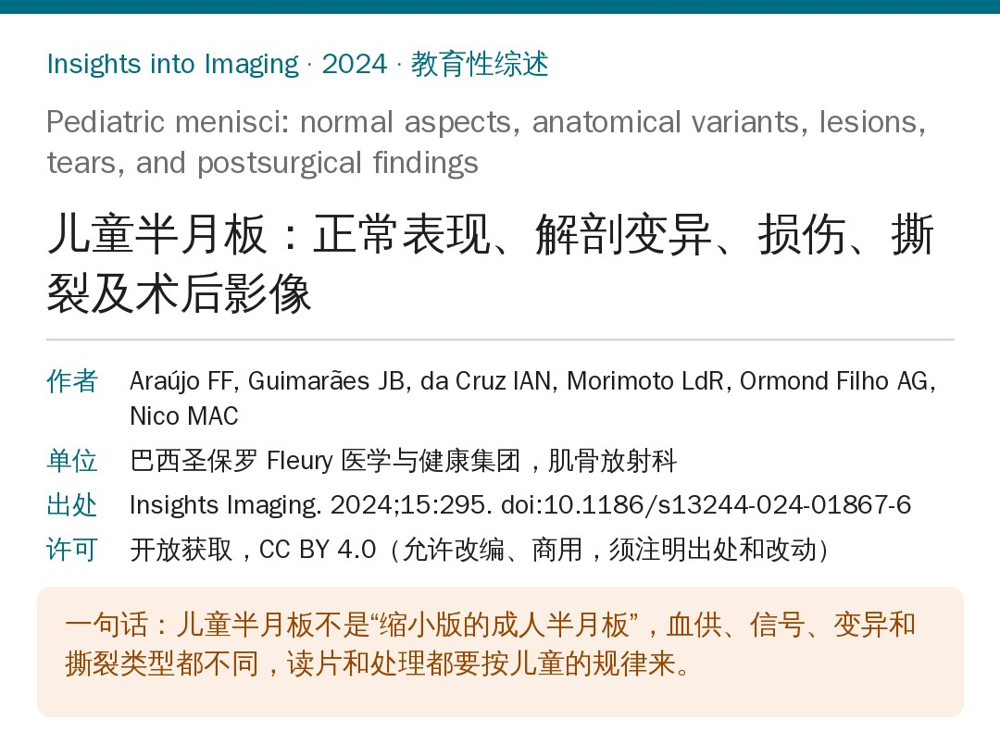
🔖原文信息（编者中文重排）
📚 文献信息
▪ Araújo FF, Guimarães JB, da Cruz IAN, Morimoto LdR, Ormond Filho AG, Nico MAC. Pediatric menisci: normal aspects, anatomical variants, lesions, tears, and postsurgical findings. Insights Imaging. 2024;15:295. doi:10.1186/s13244-024-01867-6
▪ 中文题目：儿童半月板：正常表现、解剖变异、损伤、撕裂及术后影像
▪ 作者单位：巴西圣保罗 Fleury 医学与健康集团（Higienópolis），肌骨放射科
▪ 文章类型：教育性综述（以 MRI 读片为主线，配 12 幅病例图）
孩子运动越来越多，MRI 也越来越普及，儿童半月板撕裂的报告数量一直在涨，原文引用的数据是每 10 万名运动员 5.1 例。在骨骼未成熟的膝关节里，半月板损伤和前交叉韧带损伤一样，是最常见的关节内紊乱之一。
问题在于：儿童半月板不是缩小版的成人半月板。血供更好，MRI 上本来就有“看起来像撕裂”的高信号；盘状半月板这类变异主要在儿童阶段出现症状；撕裂的部位和类型也跟成人不一样。照搬成人的读片标准，容易漏诊，也容易过度诊断。
这篇综述由放射科医生写给放射科医生，但对康复治疗师同样有用：孩子出现“伸不直”“深蹲卡住”“膝外侧弹响”时，知道背后可能是什么、MRI 报告里每个词是什么意思，转诊和沟通都会更有底。
• 内侧半月板：C 形，和关节囊贴得紧；半月板胫骨韧带（冠状韧带）在内侧更厚更强
• 外侧半月板：几乎是正圆，更小，关节囊附着少，腘肌腱裂孔处没有半月板胫骨韧带，所以天生更活动
• 外侧半月板的额外附着：板股韧带（板股前韧带即 Humphrey 韧带，走在后交叉韧带前方；板股后韧带即 Wrisberg 韧带，走在后方）、腘肌—半月板束（前下、后上、后下三束）和半月板腓骨韧带
• 板股韧带在屈膝时把外侧半月板后角往前内牵，屈膝 15°～90° 时还帮忙对抗胫骨后移，后交叉韧带断了的膝关节里更明显
• 腘肌—半月板束损伤会导致外侧半月板过度活动和半脱位，常和前交叉韧带、后外侧角损伤同时出现
• 儿童和成人半月板在整体形态和附着上没有明显差别，差别在组织成分随年龄的变化
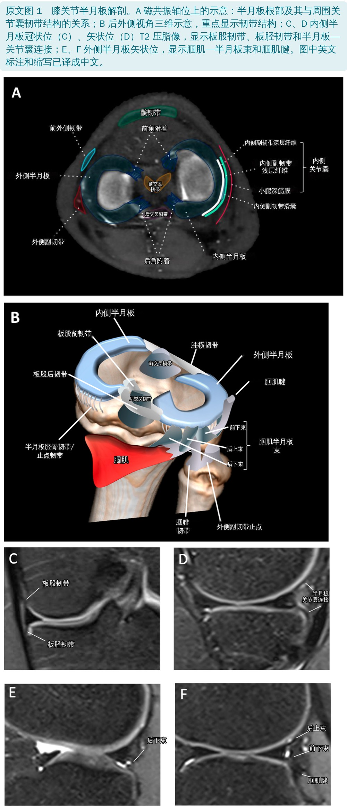
半月板在胚胎第 4 周出现，第 9 周可辨认，第 14 周已经接近成人形态。胎儿期和出生时，整个半月板都有血管；到 9 个月左右，内 1/3 的血管已经退化；10～12 岁以后只剩外周 10%～30% 有血管，和成人一样。
组织结构也在变：3 个月前以细胞为主，之后胶原逐渐增多；3 岁起胶原纤维开始沿长轴环形排列，孩子学会站立行走后环形纤维越来越多；大约 9 岁完成转变，10 岁以后的超微结构就和成人差不多了，以环形排列的 Ⅰ 型胶原为主。
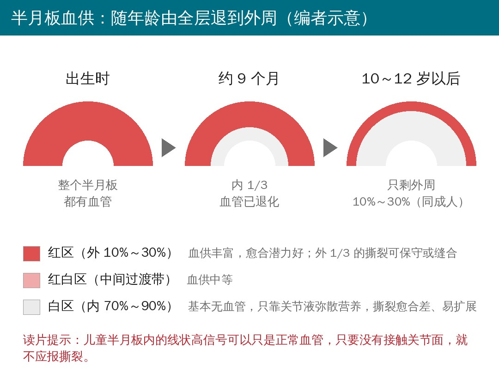
读片关键：儿童半月板内的高信号可能只是正常血管，越小越明显。呈线状时容易被当成撕裂，但血管信号不会接触关节面。这一条，是区分“正常血管”和“真撕裂”的第一道关。
盘状半月板是半月板形态的先天异常，看起来像一块扁平的圆盘，而不是正常的半月形。多见于外侧：外侧盘状半月板发生率约 0.4%～17%，内侧约 0.06%，20% 为双侧。很多人没有症状，是偶然发现的，所以真实发生率并不清楚。
| 成人 | 儿童 | |
|---|---|---|
| 常见症状 | 活动痛、交锁、打软腿、典型的“弹响膝” | 伸膝受限、膝痛、关节线压痛、交锁、弹响、打软腿 |
| 主要表现 | 多与撕裂、脱离或板股后韧带缺陷有关 | 伸膝受限是没有撕裂的盘状半月板最主要的表现，成人很少见 |
伸膝受限可能和盘状半月板在小关节腔里“占地方”有关，尤其是前部更厚：有伸膝受限的孩子，半月板前部厚度明显大于后部。
• 成人传统标准：层厚 5 mm 的矢状位上，连续 3 层以上看到前后角相连
• Araki 标准：体部中段横径超过 14 mm，不管胫骨多宽
• 包含儿童的新标准：半月板 / 胫骨宽度比 ≥ 20%，或半月板覆盖率 ≥ 75%；即使半月板已撕裂，两个指标的敏感度和特异度仍分别为 95% 和 97%（原文没有分开写两个指标各自的数值）
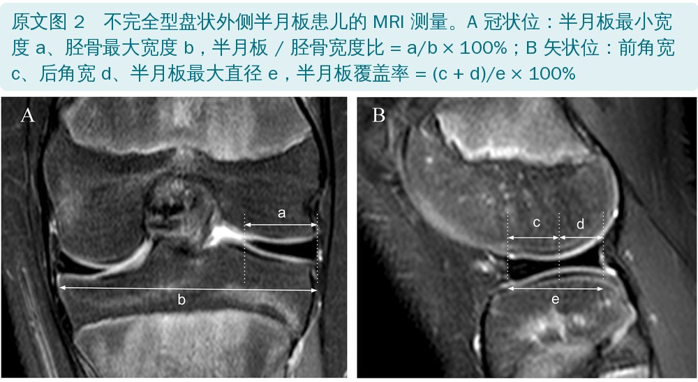
为什么盘状半月板容易撕？更厚、内部血供差，胶原纤维排列紊乱、数量少，胶原浓度低到接近退变半月板，分散环向应力的能力下降。最常见的撕裂类型是退变性水平裂（43%）。
Watanabe 分型（最常用，看形态）：
▪ Ⅰ 型完全型：盘状，中央薄，覆盖整个胫骨平台
▪ Ⅱ 型不完全型：半月形，部分覆盖胫骨平台
▪ Ⅲ 型 Wrisberg 型：缺少正常的关节囊束和半月板胫骨韧带附着，只靠 Wrisberg 韧带连到后关节囊，屈膝时容易半脱位，预后意义特殊。MRI 上正常束带缺失，会在半月板和关节囊之间留下 T2 高信号，看起来像周缘撕裂或束带损伤
▪ 近年还提出 Ⅳ 型：环形半月板，后方胫骨附着正常
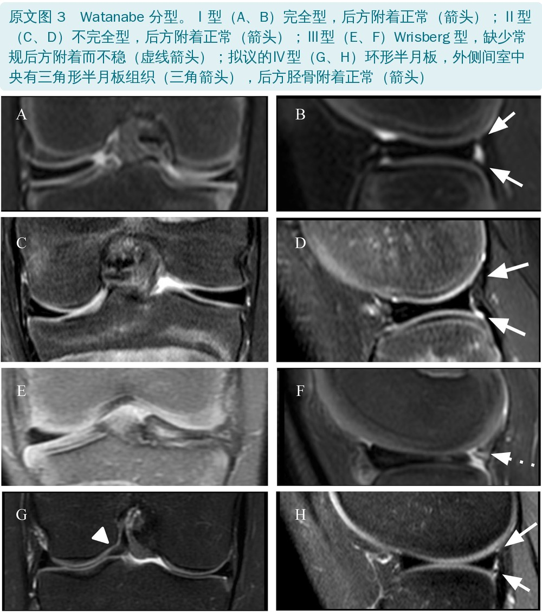
Ahn MRI 分型（不描述撕裂类型，只看半月板往哪移）：
| 分型 | 周缘附着 | 整体移位方向 |
|---|---|---|
| 无移位型 | 周缘没有和关节囊分开 | 不移位 |
| 前中心移位型 | 后角周缘与关节囊分离 | 向前 / 前中心 |
| 后中心移位型 | 前角周缘与关节囊分离 | 向后 / 后中心 |
| 中心移位型 | 后外侧周缘撕裂或缺失 | 向髁间窝方向 |
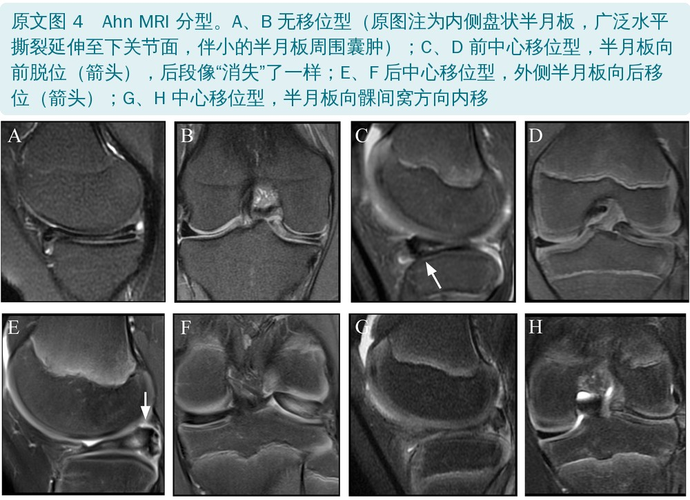
有症状、合并撕裂或不稳的盘状半月板需要治疗，所以准确诊断很重要。
关节镜研究里，有症状的外侧盘状半月板 77% 不稳：前方不稳 53%，后方不稳 16%（不稳指成形术后用探钩检查，残留半月板过度活动、周缘脱离）。
移位型在 MRI 上一眼能看出，难的是“无移位型”：MRI 看着稳定，关节镜下却可能不稳。对这种情况，原文总结了几个预测征象：
• 预测前方不稳：半月板前方旁软组织水肿、前缘线状液体信号，阳性预测值、敏感度、特异度都高
• 预测后方不稳：半月板边缘膨出、腘肌—半月板束缺失，敏感度高，但阳性预测值和特异度低
• 术前判断有没有周缘不稳、在哪一侧，能帮外科医生做好手术计划
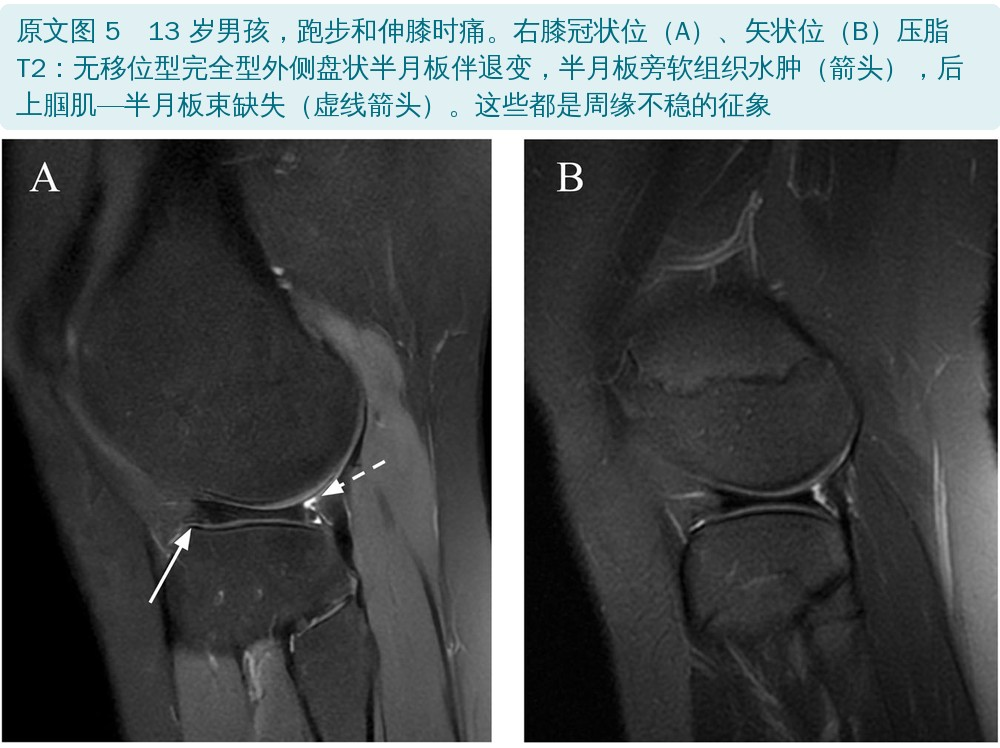
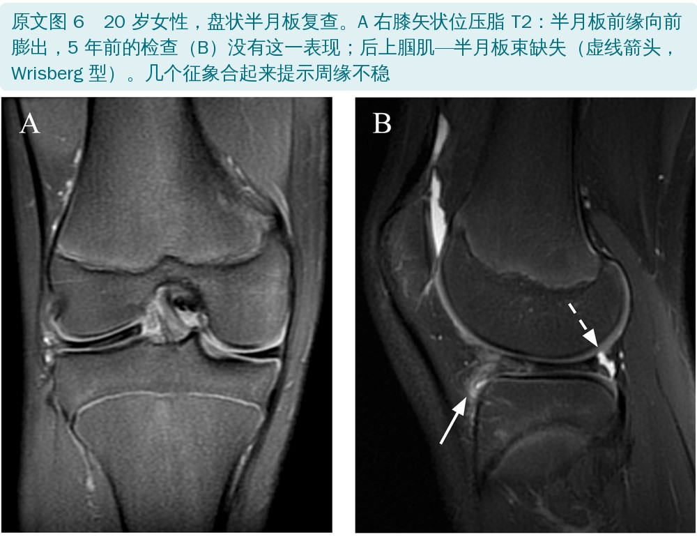
• 外侧半月板过度活动：没有撕裂、也不是盘状，但深屈膝时外侧关节线痛并交锁。多数是屈膝时外侧半月板后角异常前移，伸膝时复位。儿童多为后方关节囊附着先天不足，成人多为外伤。关节镜下用探钩能把它推过外侧髁或胫骨中点即可确认
• 这类孩子首次 MRI 常常“没问题”；能复现交锁的，可以在交锁位扫描。Suganuma 的研究里，多数患者的腘肌—半月板束在 MRI 上不清楚或看不到
• “4 字”试验（LaPrade）：屈膝、内翻、外旋，可能诱发交锁。临床怀疑时，放射科要仔细看外侧半月板的关节囊附着，必要时加扫诱发体位
• 半月板褶皱：屈膝时内侧半月板游离缘冗余形成的波浪状外观，见于 0.2%～0.3% 的无症状膝；以往当成变异，近期研究提示可能和内侧半月板撕裂有关，还可能被误读成半月板截断或放射状撕裂
• 半月板小骨：半月板内的小骨化灶，多在内侧半月板后角，可能是胚胎变异或旧伤后遗。少见，多数没症状，也可引起机械症状或疼痛，X 线和 MRI 上容易误当成游离体或撕裂
• 先天发育不良或缺如极其罕见
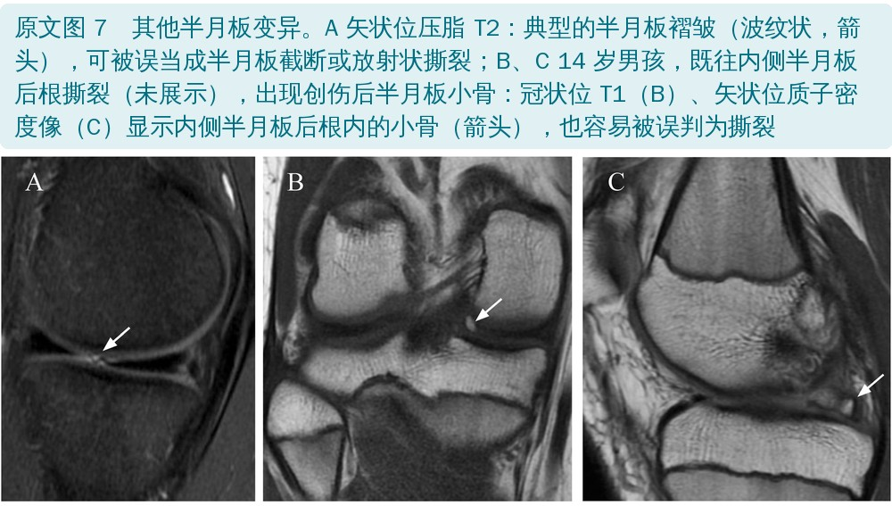
儿童的临床表现（关节痛、弹响、交锁）缺乏特异性，现在一般都要结合 MRI。MRI 没有辐射、能多平面成像、软组织分辨率高，大多数孩子也不用镇静。但要注意几个坑：
• 容易漏：盘状半月板撕裂漏诊率 26.7%，外侧半月板撕裂漏诊率 18.8%
• 和关节镜比，MRI 会高估内侧、低估外侧：儿童半月板血供丰富，在 T2 上表现为水平线状高信号，既可能掩盖撕裂，也可能被当成撕裂；盘状半月板里的线状高信号也不一定就是损伤
• 年龄越小越难：Kocher 2001 年的研究里，12 岁以下儿童 MRI 的敏感度只有 62%、特异度 90%，都比 12～16 岁的青少年低
• 作为参照，成人 MRI 诊断内侧半月板撕裂的敏感度和特异度约为 92% 和 90%，外侧为 80% 和 95%
术前、术后都先做常规 MRI：成对的快速自旋回波质子密度像加压脂 T2 筛查；术后金属伪影明显时，改用减金属伪影方案（优化的快速自旋回波质子密度像和反转恢复序列）。所有儿童膝关节都加一个各向同性 3D 序列，可以垂直于半月板做放射状重建，补足常规平面看不清的地方。关节造影只留给少数需要进一步解决问题的病例，因为它耗时、费钱、孩子难受，还有荨麻疹、迷走反应、过敏和化脓性关节炎等风险，不少国家关节内注射钆剂还属于超说明书用药。
原文表 1 MRI 序列参数（编者译）
| 序列 | TR / TE（ms） | 矩阵 | 层厚 / 间隔（mm） | 时间 |
|---|---|---|---|---|
| 3D 快速自旋回波压脂 矢状位 | 1100 / 35 | 384 × 384 | 1 / 无 | 5:55 |
| 快速自旋回波质子密度 矢状位 | 2500 / 20～30 | 512 × 480 | 2.2 / 0.4 | 1:48 |
| 快速自旋回波 T2 压脂 轴位 | 2500 / 40～50 | 512 × 480 | 3.5 / 0.3 | 1:50 |
| 快速自旋回波 T2 压脂 冠状位 | 2500 / 40～50 | 512 × 480 | 3.5 / 0.3 | 1:08 |
| T1 冠状位 | 750 / 最短 | 512 × 416 | 3.5 / 0.3 | 0:55 |
TR：重复时间；TE：回波时间。视野均为 16 cm；带宽、回波链长度、激励次数等其余参数见原文表 1。
• 发生率明显低于成人；先要分清损伤发生在正常半月板还是盘状半月板上
• 盘状半月板撕裂不一定有急性外伤，平均发病年龄更小（12.7 岁，非盘状 15.7 岁）
• 正常半月板撕裂多来自运动伤，10 岁以下少见；撕裂类型和成人一样，但比例不同
• 20 岁以下外侧比内侧多；单纯内侧撕裂随年龄增加
• 年龄小的多为单纯半月板撕裂，年龄大的青少年更常合并韧带伤，可能和竞技运动参与增多有关；高中运动员最常见的合并伤是前交叉韧带损伤（36.9%）
• Samora 等 124 例骨骼未成熟、做前交叉韧带重建的患者中，69.3% 合并半月板损伤：只伤外侧 41%，只伤内侧 13%，两侧都伤 15%；主要是垂直和周缘撕裂
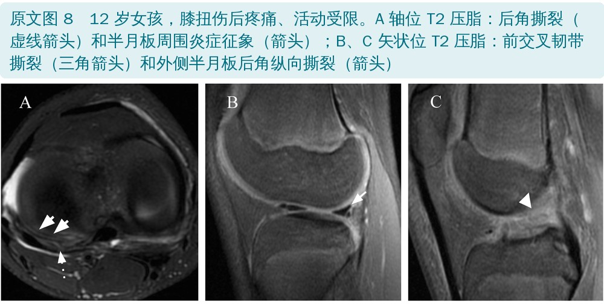
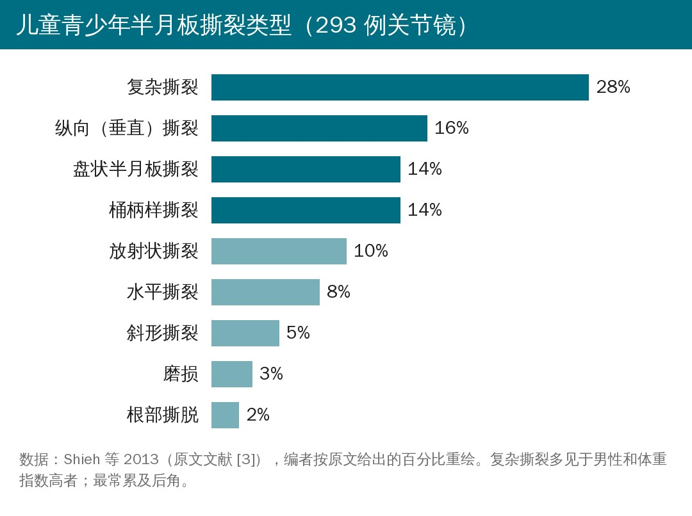
儿童半月板根部撕裂不常见，但一旦漏诊，会严重破坏半月板生物力学，加速骨关节炎。和成人不同：成人多是内侧后根撕裂，儿童多是外侧后根撕脱，而且常合并前交叉韧带损伤。原文图 9 这个 9 岁女孩是例外：内侧后根撕裂，没有前交叉韧带损伤。儿童急性后根撕裂血供好，及时诊断就更有机会修复愈合。
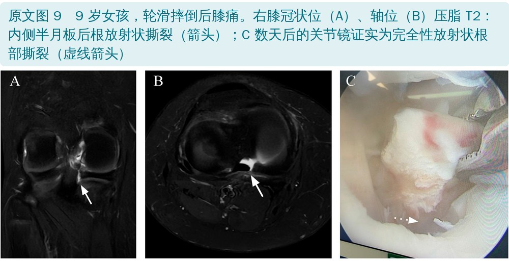
传统定义：半月板内线状高信号延伸到股骨面或胫骨面。按方向可分为水平、放射状、纵向、桶柄样和复杂撕裂：
• 水平撕裂：平行于胫骨平台，把半月板分成上下两片
• 放射状撕裂：垂直于半月板长轴，从游离缘开始
• 纵向撕裂：平行于长轴、垂直走行，远离游离缘
• 桶柄样撕裂：纵向撕裂够长，内侧碎片移位进髁间窝
• 复杂撕裂：信号异常以不止一个方向接触半月板表面，形成不止一个碎片
除了信号，形态异常也提示撕裂：边缘不规则、关节面局灶缺损、某一段半月板异常变小。看到半月板某段比正常小，一定要去找移位的碎片。
位置决定治疗：外 1/3 的周缘撕裂血供丰富，保守或缝合都更容易愈合。斜坡样损伤（ramp 损伤）是半月板和相邻关节囊分离，可导致不稳，多见于内侧（和关节囊贴得紧），也可见于外侧后外角腘肌—半月板束附着处。儿童 MRI 上提示 ramp 损伤的表现有：内侧半月板撕裂、周缘不规则、半月板—关节囊连接处液体样信号、关节囊韧带撕裂。
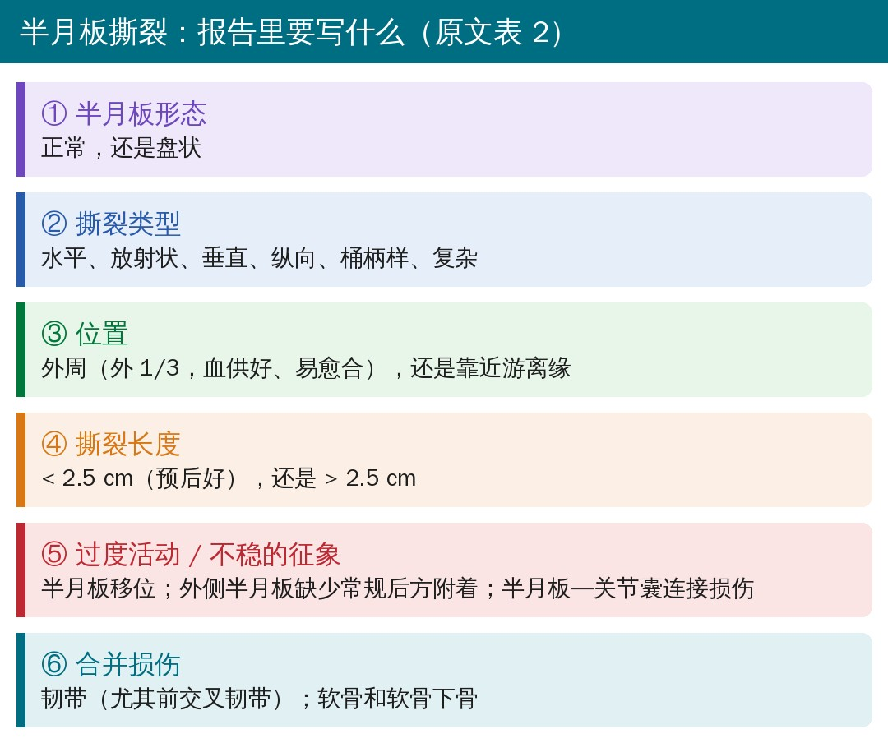
• 保守治疗：无症状的撕裂和无症状的盘状半月板。外周血供区小的、无移位撕裂可能自愈或不再有症状。做法是康复训练，同时 12 周内避免扭转动作和运动
• 多数儿童撕裂较大，需要手术。缝合能降低以后关节退变的风险，强烈推荐用于中 1/3 和外 1/3（有血供区）的撕裂、纵向垂直撕裂，以及和前交叉韧带重建同期做
• 系统综述显示：无论单纯缝合还是和前交叉韧带重建同期，儿童半月板缝合的结果都是良到优，并发症少，临床愈合率高
• 全切或次全切的结果差，儿童以后的骨关节炎可能比成人更重
• 半月板移植在儿童很少需要，是切除术后综合征的一个可行选择
• 缝合后，T2 上修复处贯穿的液体样信号可以是正常表现：那是未成熟的纤维血管肉芽组织和成熟的纤维软骨瘢痕，可在 MRI 上持续 6 个月，最长到 12 年
• 提示再撕裂：碎片移位；T2 上修复处贯穿的高信号（需结合术前、术式对比）；远离修复处的新异常信号
• 常规 MRI 找不到原因、或高度怀疑再撕裂又没有术前片对比时，可做直接 MR 关节造影：造影剂在 T1 上渗进裂隙，是再撕裂的可靠征象
• 不管用哪种方案，申请单上都要写清楚基线病史、症状、手术类型和日期，并附上术前影像
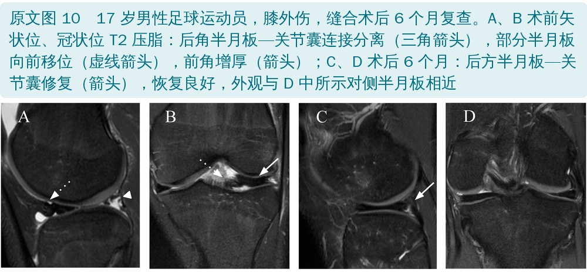
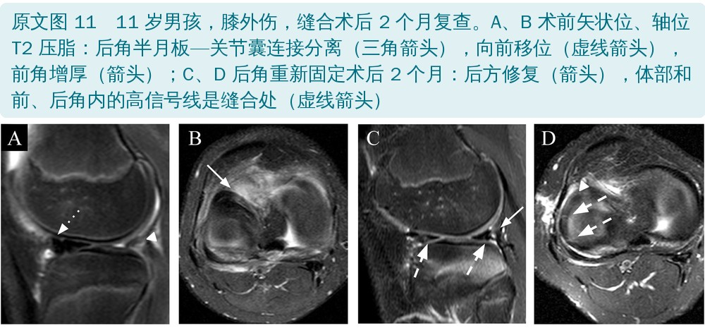
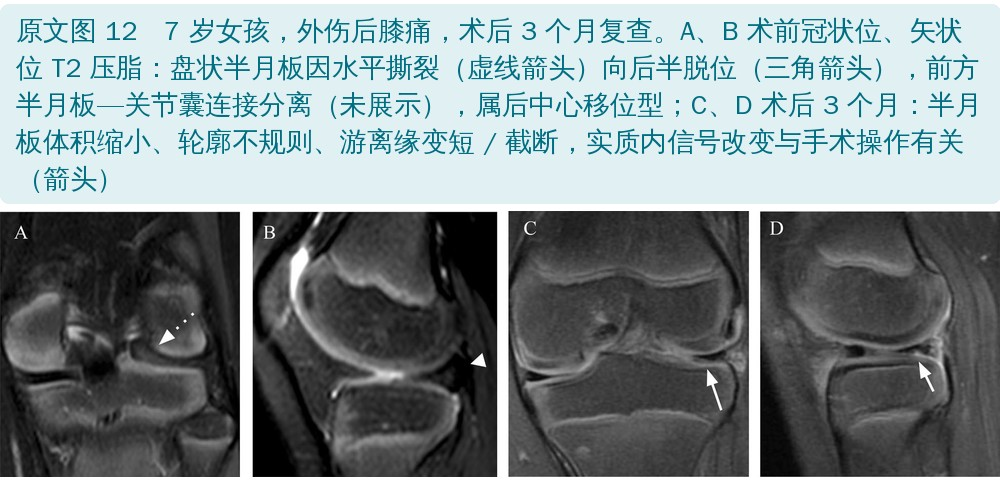
• 文章类型是教育性综述：单中心作者结合文献和自家病例写成，没有系统检索，也没有原始数据分析，适合当读片入门和知识框架，不能当证据级别高的结论用
• 数字多来自被引文献：盘状半月板发生率、诊断准确率、撕裂类型比例等，都是转引，原始研究的样本和人群差别很大
• 病例图都是典型例：挑出来的教学图，真实读片中边界情况更多
• 优点：把“儿童和成人哪里不一样”这条主线串得很清楚，配图覆盖解剖、变异、撕裂和术后，报告清单实用
• 引用错位：正文说 Samora 研究里的“主要撕裂类型是垂直和周缘撕裂 [36]”，但文献 36 是 Suganuma 关于腘肌—半月板束的研究，Samora 的文章是文献 52
• Watanabe 分型的年份：正文写“1978 年提出”，对应的文献 25 是 1979 年出版的关节镜图谱第 3 版
• 图 4 的分型和部位：Ahn 分型是针对外侧盘状半月板的，但图 4 A、B 的图注写的是“内侧盘状半月板”
• 儿童综述里出现了成人病例：图 6 是一位 20 岁女性（对比的是她 15 岁时的片子）
• “敏感度和特异度 95% 和 97%”指代不清：正文说半月板 / 胫骨宽度比和半月板覆盖率“两个比值的敏感度和特异度分别为 95% 和 97%”，没有分开写每个指标
• 撕裂类型里混进了“盘状”：转引 Shieh 的撕裂类型分布时，把“盘状半月板撕裂”当成一种撕裂类型，和水平、放射状等并列
• 表 2 小错：“SIGNS”拼成了“SINGS”；“撕裂长度 2.5 cm”这个预后切点正文没有给出处
• 图 10 图注：说术后半月板“与 D 中的对侧半月板外观相近”，但 D 是同一膝关节的冠状位，指的应是同一膝的另一侧半月板（编者理解）
• 孩子膝“伸不直”、又没有明显外伤：想到外侧盘状半月板，这是儿童盘状半月板最主要的表现
• 深蹲 / 深屈膝时外侧卡住、伸直又好了：想到外侧半月板过度活动，可以做“4 字”试验；首次 MRI 阴性不能完全排除
• 看 MRI 报告时，儿童的“半月板内高信号”先别慌：没接触关节面，多是正常血管
• 撕裂在外 1/3：愈合条件好；保守的话，康复期间 12 周内避免扭转和运动
• 儿童以“保半月板”为原则：术后康复按缝合方案走，术后 MRI 上修复处的高信号可以持续很久，不等于失败
• 合并前交叉韧带损伤的青少年：近七成合并半月板损伤，外侧更常见，评估时别只盯着韧带
欢迎关注骨科康复小黄公众号，获取更多物理治疗的专业知识！
📄参考文献：
Araújo FF, Guimarães JB, da Cruz IAN, Morimoto LdR, Ormond Filho AG, Nico MAC. Pediatric menisci: normal aspects, anatomical variants, lesions, tears, and postsurgical findings. Insights Imaging. 2024;15:295. doi:10.1186/s13244-024-01867-6
原文 © The Author(s) 2024，以知识共享署名 4.0 国际许可（CC BY 4.0，http://creativecommons.org/licenses/by/4.0/）开放获取，允许在注明原作者和出处的前提下转载、改编。本文为中文解读，相对原文的改动：原文图 1 中的英文标注和缩写已原位译成中文；原文图 2～12 为 MRI 和关节镜图像，图内只有面板字母、测量字母和箭头，原样引用（仅等比缩放），中文图注为编者翻译；表格为编者根据原文表 1、表 2 翻译整理；首图、血供示意图、撕裂类型分布图、报告清单卡和封面为编者根据原文绘制。